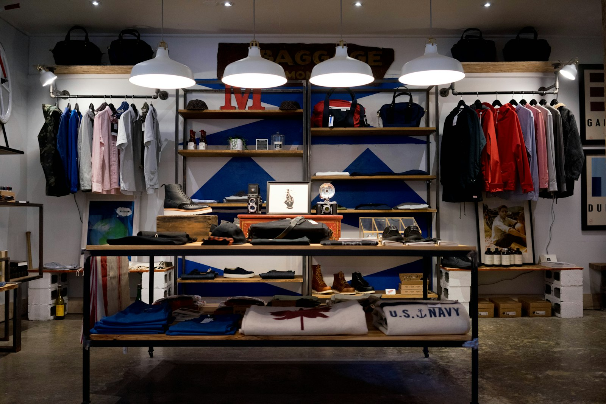

Erre a három kérdésre a vevő 10 másodperc alatt választ akar.

Ez a változat a legkevesebbet kéri a látogatótól: nagy fotók helyett tiszta szöveg.
Termékkörök, márkák, akciók.
Mindig naprakészen, ünnepnapokkal.
Térkép, parkolás, bejárat.
Ez az adat a nyilvános térképi adatbázisból jött. Ha nem pontos, egy perc javítani.
Megnéztük a weboldalukat telefonon.